Fit
Model fitting in CPPLS is performed using StatsAPI.fit together with a CPPLSModel. This unified interface supports both regression and discriminant analysis, providing a consistent workflow for a wide range of supervised modeling tasks.
The distinction between regression and discriminant analysis in CPPLS, as specified by the mode keyword in CPPLSModel, mainly determines which convenience functions are available for downstream analysis. For model fitting itself, the essential difference is that discriminant analysis (DA) uses a one-hot encoded $Y$ matrix as the response, while regression typically uses a $Y$ vector or matrix with continuously varying values.
CPPLS is highly flexible: the response $Y$ can contain both one-hot encoded columns (for classification/DA) and continuous columns (for regression) at the same time. This allows for hybrid models that align predictor variables to multiple response variables of different types. In such cases, users must encode the $Y$ matrix appropriately and extract the relevant outputs from project and predict.
Whenever Y has different values, one should make sure that they are scaled so that their individual impact is controlled for.
You can optionally provide observation weights (keyword argument obs_weights) and auxiliary response information (keyword argument Y_aux) to StatsAPI.fit. Observation weights control the influence of each sample on the model, while auxiliary responses guide the supervised projection without changing the primary prediction target. In discriminant analysis, observation weights are especially useful for addressing class imbalance. Together with the gamma parameter—which balances predictor and response variances and their correlation—these options allow you to tailor a CPPLS model to your dataset. Other choices, such as the number of components, may also be important depending on your analysis.
If you plan to use observation weights or auxiliary responses, specify them before selecting the gamma parameter, as both can affect the supervised objective and, consequently, the most appropriate gamma values.
Example
In this example, we use a synthetic dataset that ships with the package. The dataset contains 100 samples: 10 belong to the minority class minor and 90 to the majority class major. Accordingly, the predictor matrix has 100 rows and 14 columns, representing 14 measured traits. The dataset is useful for illustrating three modeling choices that interact in practice: inverse-frequency observation weighting, the auxiliary response, and the selection of gamma once those ingredients are in place.
The dataset was constructed so that a plain PCA score plot is dominated by nuisance structure, whereas CPPLS-DA recovers the class contrast more clearly. That makes it a useful benchmark for showing how observation weighting and auxiliary responses change the fitted score space and how gamma should then be chosen for that full model.
In addition to CPPLS, the example uses JLD2 to load the dataset from disk, MultivariateStats to compute the PCA baseline, Colors to convert the auxiliary variable into grayscale values in the later auxiliary-response plots, Statistics to orient the latent variables consistently across plots, and CairoMakie to render static figures. The Julia Pkg documentation explains how to install registered packages in the Getting Started section.
using CPPLS
using JLD2
using MultivariateStats
using Statistics
using CairoMakie
using Colors
# Get custom colors
orange, blue = Makie.wong_colors()[2], Makie.wong_colors()[1]
# Load example data from file
data = load(CPPLS.dataset("synthetic_cppls_da_dataset.jld2"))
# Extract data of interest
sample_labels = data["sample_labels"]
X = data["X"]
classes = data["classes"]
Y_aux_raw = data["Y_aux"]
# Standardize Y_aux to ensure balanced impact with one-hot Y
using Statistics
Y_aux = (Y_aux_raw .- mean(Y_aux_raw; dims=1)) ./ std(Y_aux_raw; dims=1)For comparison, we first fit a Principal Component Analysis (PCA) baseline to inspect the separation of the two classes based on variance alone.
M = fit(PCA, X'; maxoutdim=2)
scores_pca = permutedims(predict(M, X'))
pca_plt = scoreplot(
sample_labels,
classes,
scores_pca;
backend=:makie,
figure_kwargs=(; size=(900, 600)),
title="PCA scores",
xlabel="Principal Component 1",
ylabel="Principal Component 2",
group_order=["minor", "major"],
group_marker=Dict("minor" => (; color=orange), "major" => (; color=blue)),
default_marker=(; markersize=14)
)
save("pca.svg", pca_plt)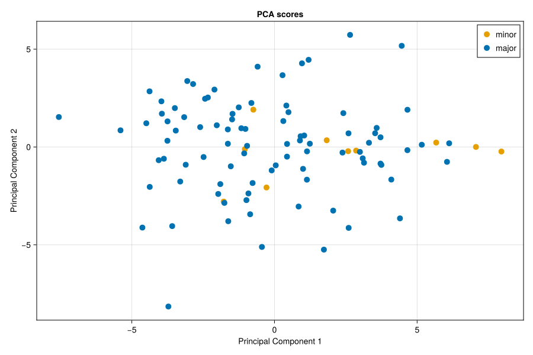
In this synthetic dataset, the first two principal components are not optimized for class discrimination, so a substantial part of the visible structure reflects nuisance variation rather than the class contrast of interest.
Observation Weights and Auxiliary Responses
To illustrate the impact of class imbalance and auxiliary response information on latent variable extraction, we show how adding each of these factors changes the X scores of the fitted model. In this demonstration, we use a fixed gamma value of 0.5 so that only the parameter of interest varies. In a real-world scenario, you would typically decide whether to include observation weights and auxiliary responses before the main analysis, and then optimize gamma in a model that already includes these parameters.
We start with a plain model in which neither observational weights nore auxiliary response information is considered.
spec = CPPLSModel(
ncomponents=2,
gamma=0.5,
mode=:discriminant
)
m_plain = fit(
spec,
X,
classes;
samplelabels=sample_labels
)
cppls_plain_plt = scoreplot(
sample_labels,
classes,
xscores(m_plain, 1:2);
backend=:makie,
figure_kwargs=(; size=(900, 600)),
title="CPPLS-DA scores from an inverse-frequency-weighted model",
group_order=["minor", "major"],
group_marker=Dict("minor" => (; color=orange), "major" => (; color=blue)),
default_marker=(; markersize=14)
)
save("cppls_plain.svg", cppls_plain_plt)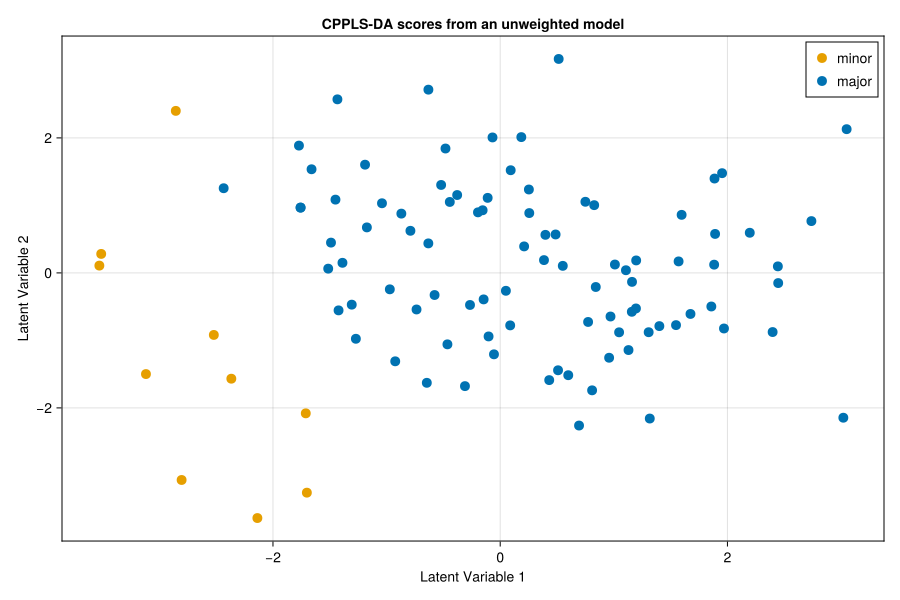
Even in this comparatively simple model, the samples belonging to the two classes are noticeably better separated from each other than in the PCA score plot.
Next, we add inverse-frequency observation weights by specifying the obs_weights keyword argument in the fit function. To calculate the inverse-frequency weights for samples in each class, we use the function invfreqweights. This adjustment gives the two classes equal total influence on the fitted model and thus removes the class size imbalance.
class_weights = invfreqweights(classes)
m_weighted = fit(
spec,
X,
classes;
obs_weights=class_weights, # <- added parameter
samplelabels=sample_labels
)
cppls_weighted_plt = scoreplot(
sample_labels,
classes,
xscores(m_weighted, 1:2);
backend=:makie,
figure_kwargs=(; size=(900, 600)),
title="CPPLS-DA scores from an inverse-frequency-weighted model",
group_order=["minor", "major"],
group_marker=Dict("minor" => (; color=orange), "major" => (; color=blue)),
default_marker=(; markersize=14)
)
save("cppls_weighted.svg", cppls_weighted_plt)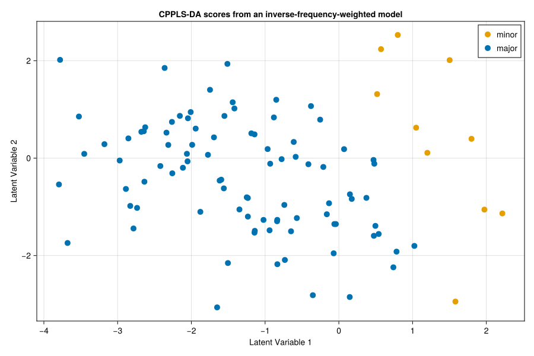
Applying inverse-frequency weights makes the discriminant structure more symmetric. In this example, the main effect is not a larger distance between the groups, but rather a recentering and slight rotation of the latent space so that the class contrast is less biased by class prevalence.
At this point, the class separation already looks convincing. In this dataset, however, it is driven not only by class-related variation but also by variation associated with auxiliary responses. For example, suppose the samples in the two groups were analyzed using two different instruments, and the choice of instrument is correlated with group membership. If most majority-class samples were measured with instrument A and most minority-class samples with instrument B, then instrument effects could confound the class separation.
If such auxiliary information is available, we can provide it to the model so that it can account for this confounding structure. This is done using the optional keyword argument Y_aux in the fit function. Supplying auxiliary response information changes how the latent variables are estimated: instead of forcing all supervised structure into the class contrast, the model can also explicitly model variation associated with the auxiliary responses. This helps ensure that the separation between the classes is not driven by confounding factors, but rather by the traits of true interest.
m_weighted_yaux = fit(
spec,
X,
classes;
obs_weights=class_weights,
Y_aux=Y_aux, # <- added parameter
samplelabels=sample_labels
)
cppls_weighted_yaux_plt = scoreplot(
sample_labels,
classes,
xscores(m_weighted_yaux, 1:2);
backend=:makie,
figure_kwargs=(; size=(900, 600)),
title="CPPLS-DA scores from an inverse-frequency-weighted model with auxiliary responses",
group_order=["minor", "major"],
group_marker=Dict("minor" => (; color=orange), "major" => (; color=blue)),
default_marker=(; markersize=14)
)
save("cppls_weighted_yaux.svg", cppls_weighted_yaux_plt)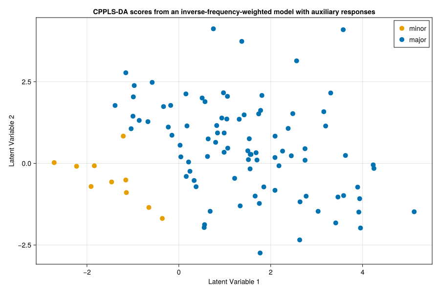
The visible class separation may not have increased, but it is now more likely to reflect information that is genuinely related to class membership rather than variation carried by a correlated covariate. To make that difference easier to see, we plot the last two score sets again, now shading each point by its auxiliary response value.
# Convert auxialliary matrix to a vector
aux = vec(Y_aux[:, 1])
# Generate colors for each Y_aux value within range Gray(0.1) and Gray(0.8)
aux_min, aux_max = extrema(aux)
point_colors = Gray.(0.1 .+ 0.8 .* ((aux .- aux_min) ./ (aux_max - aux_min)))
cppls_weighted_shaded_plt = scoreplot(
sample_labels,
fill("samples", length(sample_labels)),
xscores(m_weighted, 1:2);
backend=:makie,
figure_kwargs=(; size=(900, 600)),
title="CPPLS-DA scores from an inverse-frequency-weighted model " *
"shaded by auxiliary values",
show_legend=false,
default_scatter=(; color=point_colors),
default_marker=(; markersize=14)
)
save("cppls_weighted_shaded.svg", cppls_weighted_shaded_plt)
cppls_weighted_yaux_shaded_plt = scoreplot(
sample_labels,
fill("samples", length(sample_labels)),
xscores(m_weighted_yaux, 1:2);
backend=:makie,
figure_kwargs=(; size=(900, 600)),
title="CPPLS-DA scores from an inverse-frequency-weighted model with auxiliary responses " *
"shaded by auxiliary values",
show_legend=false,
default_scatter=(; color=point_colors),
default_marker=(; markersize=14)
)
save("cppls_weighted_yaux_shaded.svg", cppls_weighted_yaux_shaded_plt)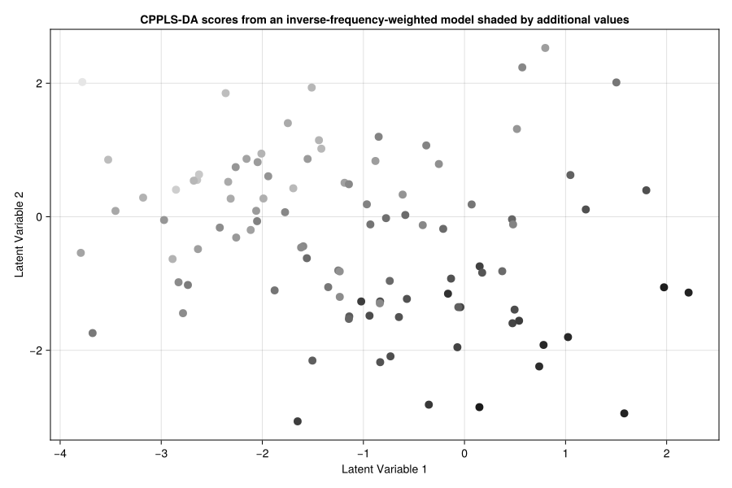
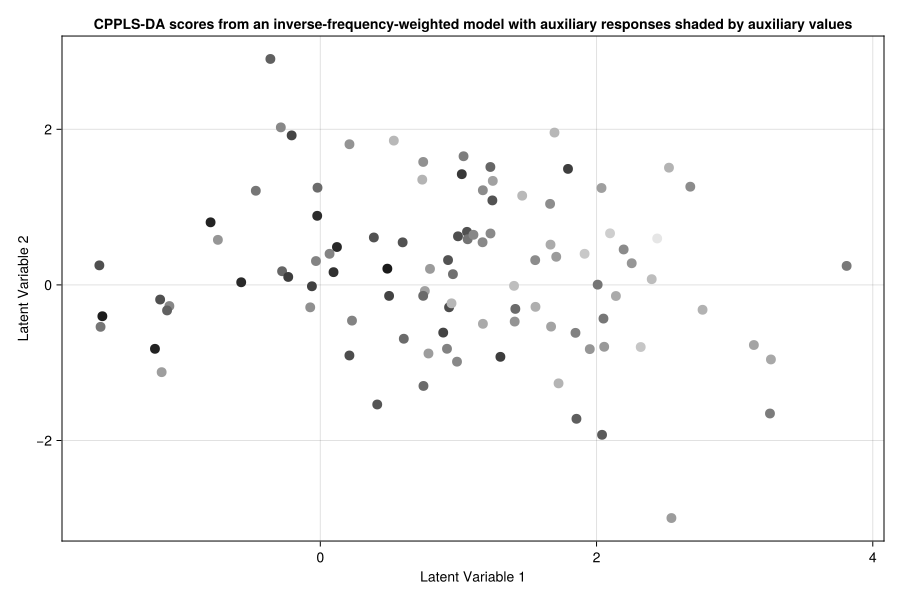
In the first shaded score plot, fitted without auxiliary response information, the grayscale values are not randomly distributed across the score space. Instead, they are arranged roughly along the first latent dimension. This indicates that auxiliary signal correlated with class membership has leaked into the apparent class separation.
With the auxiliary response information included, as shown in the second plot, the auxiliary structure is much less pronounced in the fitted scores, as indicated by the grayscale values being more evenly distributed across the plot.
Choosing Gamma for the Weighted + Auxiliary Model
With observation weights and Y_aux in place, we can now choose gamma for the model we actually want to interpret.
The gamma argument supports three distinct workflows. A fixed scalar such as 0.5 uses the same value for every latent variable. A grid such as 0:0.01:1 evaluates a set of fixed candidate values and keeps the one with the largest leading canonical correlation for each latent variable. An interval specification such as [(0.1, 0.3), (0.7, 0.9)] performs one bounded search inside each closed interval, so both endpoints are included in the search, and then keeps the best interval-wise optimum. The package ships with the helper function intervalize, which converts a grid into a list of adjacent intervals, for example intervalize(0:0.01:1).
That distinction matters for diagnostics. The stored values returned by gammas(model, lv) and rhos(model, lv) contain one point per candidate supplied to gamma. For a grid, that gives a sampled view of the objective curve across gamma. For intervalize(...), it gives one selected optimum per interval, which is useful for comparing intervals but is not itself a dense landscape trace. If the goal is to visualize the shape of the gamma objective, prefer a grid. If the goal is robust optimization over subranges, prefer intervals.
We first inspect the objective landscape on a dense grid and then use interval-based optimization to obtain a practical two-component fit.
weighted_yaux_grid_spec = CPPLSModel(
ncomponents=1,
gamma=0:0.001:1,
mode=:discriminant
)
weighted_yaux_grid_model = fit(
weighted_yaux_grid_spec,
X,
classes;
obs_weights=class_weights,
Y_aux=Y_aux
)
weighted_yaux_grid_gammas = gammas(weighted_yaux_grid_model, 1)
weighted_yaux_grid_rhos = rhos(weighted_yaux_grid_model, 1)
selected_weighted_yaux_grid_gamma = gamma(weighted_yaux_grid_model)[1]
println("Best gamma with obs_weights and Y_aux: ", selected_weighted_yaux_grid_gamma)
i = findfirst(==(selected_weighted_yaux_grid_gamma), weighted_yaux_grid_gammas)
println("Associated rho^2: ", weighted_yaux_grid_rhos[i])
weighted_yaux_gamma_fig = Figure(size=(900, 450))
weighted_yaux_gamma_ax = Axis(
weighted_yaux_gamma_fig[1, 1],
xlabel="Gamma",
ylabel="Leading Squared Canonical Correlation",
title="Weighted + auxiliary objective landscape over gamma"
)
lines!(weighted_yaux_gamma_ax, weighted_yaux_grid_gammas, weighted_yaux_grid_rhos;
color=:grey70, linewidth=3)
vlines!(weighted_yaux_gamma_ax, [selected_weighted_yaux_grid_gamma];
color=:black, linestyle=:dash)
save("gamma_weighted_yaux_grid.svg", weighted_yaux_gamma_fig)Best gamma with obs_weights and Y_aux: 0.692
Associated rho^2: 0.772216566254328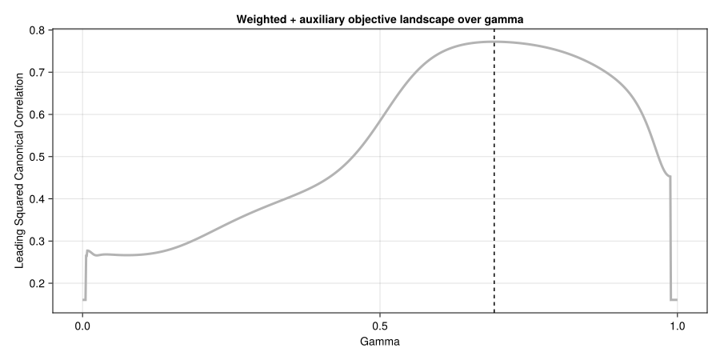
To turn that landscape into an actual optimization step, we next search over adjacent intervals. The grey curve below is the dense landscape just plotted, the red points are the best values retained from each interval, and the dashed line marks the overall winner.
weighted_yaux_interval_spec = CPPLSModel(
ncomponents=1,
gamma=intervalize(0:0.05:1),
mode=:discriminant
)
weighted_yaux_interval_model = fit(
weighted_yaux_interval_spec,
X,
classes;
obs_weights=class_weights,
Y_aux=Y_aux
)
weighted_yaux_interval_gammas = gammas(weighted_yaux_interval_model, 1)
weighted_yaux_interval_rhos = rhos(weighted_yaux_interval_model, 1)
selected_weighted_yaux_gamma = gamma(weighted_yaux_interval_model)[1]
println("Interval-optimized gamma with obs_weights and Y_aux: ", selected_weighted_yaux_gamma)
i = findfirst(==(selected_weighted_yaux_gamma), weighted_yaux_interval_gammas)
println("Associated rho^2: ", weighted_yaux_interval_rhos[i])
weighted_yaux_interval_fig = Figure(size=(900, 450))
weighted_yaux_interval_ax = Axis(
weighted_yaux_interval_fig[1, 1],
xlabel="Gamma",
ylabel="Leading Squared Canonical Correlation",
title="Interval-wise gamma optimization with weights and auxiliary responses"
)
lines!(weighted_yaux_interval_ax, weighted_yaux_grid_gammas, weighted_yaux_grid_rhos;
color=:grey70, linewidth=3)
scatter!(weighted_yaux_interval_ax, weighted_yaux_interval_gammas, weighted_yaux_interval_rhos;
color=:firebrick, markersize=10)
vlines!(weighted_yaux_interval_ax, [selected_weighted_yaux_gamma];
color=:firebrick, linestyle=:dash)
save("gamma_weighted_yaux_intervals.svg", weighted_yaux_interval_fig)Interval-optimized gamma with obs_weights and Y_aux: 0.691744860864349
Associated rho^2: 0.7722166962883602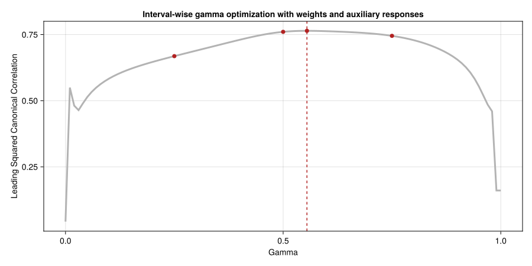
In this example, the interval-based optimization returns almost the same gamma value as the dense grid search, so the difference is negligible in practice. That agreement should not be taken for granted, however. If the objective landscape is rugged or contains multiple local optima, an interval-based search can miss a narrow global maximum or favor different local solutions depending on how the interval partition is chosen. It is therefore advisable to first inspect the landscape on a grid and then decide whether a coarse or dense interval partition is appropriate for downstream analyses such as cross- validation and permutation testing.
Finally, we fit the two-component discriminant model with interval-optimized gamma while keeping both inverse-frequency weights and Y_aux. This is the most favorable DA setup examined in this example because weighting, auxiliary supervision, and gamma selection are all aligned with the same objective.
weighted_yaux_best_spec = CPPLSModel(
ncomponents=2,
gamma=intervalize(0:0.05:1),
mode=:discriminant
)
m_weighted_yaux_best = fit(
weighted_yaux_best_spec,
X,
classes;
obs_weights=class_weights,
Y_aux=Y_aux,
samplelabels=sample_labels
)
selected_weighted_yaux_rhos = [
rhos(m_weighted_yaux_best, lv)[findfirst(
==(gamma(m_weighted_yaux_best)[lv]),
gammas(m_weighted_yaux_best, lv),
)]
for lv in 1:2
]
println("Selected gammas for the two latent variables: ",
round.(gamma(m_weighted_yaux_best), digits=3))
println("Associated rho^2: ", round.(selected_weighted_yaux_rhos, digits=6))
cppls_weighted_yaux_best_plt = scoreplot(
sample_labels,
classes,
xscores(m_weighted_yaux_best, 1:2);
backend=:makie,
figure_kwargs=(; size=(900, 600)),
title="CPPLS-DA scores with weights, Y_aux, and optimized gamma",
group_order=["minor", "major"],
group_marker=Dict("minor" => (; color=orange), "major" => (; color=blue)),
default_marker=(; markersize=14)
)
save("cppls_weighted_yaux_best.svg", cppls_weighted_yaux_best_plt)Selected gammas for the two latent variables: [0.692, 0.676]
Associated rho^2: [0.772217, 0.038351]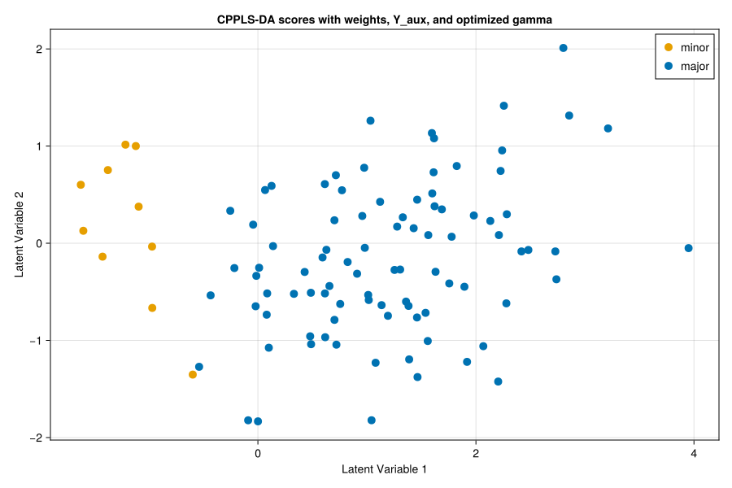
Overall, the example shows how observation weights can rebalance class influence, how auxiliary responses can help separate auxiliary structure from the signal that is genuinely relevant to group membership, and how gamma should be chosen only after those ingredients are in place.
Regression Example: Predicting a Continuous Response
The previous sections focused on discriminant analysis, but CPPLS is equally suited for regression tasks. To illustrate this, we now demonstrate a regression workflow using the same synthetic dataset. Here, we regress $X$ against the continuous response $Y_{aux}$, while using the original class labels $Y$ as an auxiliary response. This setup mimics scenarios where the main prediction target is continuous, but additional categorical or structured information is available to guide the supervised projection.
This example highlights several key points:
- Regression in CPPLS uses the same unified interface as DA, with
mode=:regression. - Auxiliary responses can help ensure that the extracted latent variables reflect the main regression signal, not confounding structure from correlated categorical variables.
- Observation weighting is generally less critical in regression with balanced synthetic data, but the option remains available for real-world scenarios with heteroscedasticity or sample importance.
This approach demonstrates the flexibility of CPPLS for hybrid modeling, where both continuous and categorical responses can be leveraged.
using CPPLS
using JLD2
using CairoMakie
using Colors
using GLM
using DataFrames
# Load example data
data = load(CPPLS.dataset("synthetic_cppls_da_dataset.jld2"))
sample_labels = data["sample_labels"]
X = data["X"]
Y_main = data["Y_aux"] # main regression target
classes = data["classes"]
# Use only the matrix part of onehot encoding
Y_aux_mat, _ = onehot(classes) # auxiliary response as one-hot matrix
# Set up regression spec: predict Y_main from X, use Y_aux_mat as auxiliary
reg_spec = CPPLSModel(
ncomponents=2,
gamma=intervalize(0:0.05:1),
mode=:regression
)
m_reg = fit(
reg_spec,
X,
Y_main;
Y_aux=Y_aux_mat, # Use one-hot encoded class labels as auxiliary response
samplelabels=sample_labels
)
# For regression, visualize predicted Y vs. true Y, with regression line
# Ensure both are 1D vectors for the first response column
Y_pred = predict(m_reg, X, 1)[:, 1, 1] # predicted values (vector)
Y_true = Y_main[:, 1] # true values (vector, first response column)
# Fit regression line using GLM
df = DataFrame(y_true=Y_true, y_pred=Y_pred)
lm = fit(LinearModel, @formula(y_pred ~ y_true), df)
Y_fit = predict(lm)
fig = Figure(size=(900, 450))
ax = Axis(fig[1, 1],
xlabel="True Y_aux (first response)",
ylabel="Predicted Y_aux (first response, first component)",
title="Regression: Predicted vs. True Y_aux (first response)"
)
scatter!(ax, Y_true, Y_pred, color=:dodgerblue, markersize=10, label="Samples")
lines!(ax, Y_true, Y_fit, color=:firebrick, linewidth=3, label="Regression line")
axislegend(ax)
save("regression_scoreplot.svg", fig)
#+# Additional plot: LV1 vs. Y_true
LV1 = xscores(m_reg, 1)[:, 1] # first latent variable (component 1)
fig_lv1 = Figure(size=(900, 450))
ax_lv1 = Axis(fig_lv1[1, 1],
xlabel="LV1 (first component)",
ylabel="True Y_aux (first response)",
title="LV1 vs. True Y_aux (first response)"
)
scatter!(ax_lv1, LV1, Y_true, color=:seagreen, markersize=10, label="Samples")
axislegend(ax_lv1)
save("lv1_vs_ytrue.svg", fig_lv1)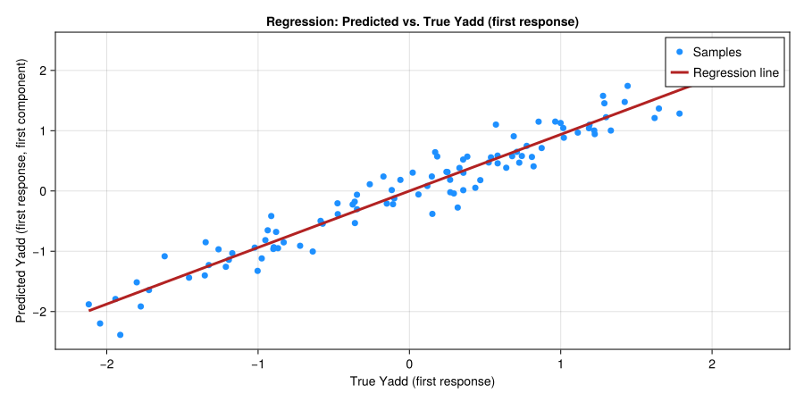
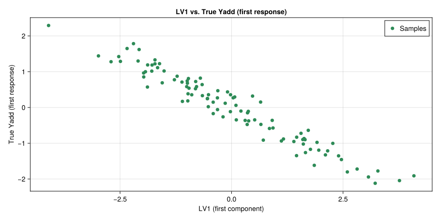
In this plot, each point represents a sample, with its position determined by the first latent variable (t₁) and the predicted value of $Y_{aux}$. This visualization helps assess how well the main direction of variance in $X$ (as captured by t₁) aligns with the regression target. The use of class labels as an auxiliary response ensures that the extracted components are not unduly influenced by class-related structure, but instead focus on the continuous outcome of interest.
This regression example demonstrates the versatility of CPPLS for both regression and classification, and shows how auxiliary responses can be used to disentangle complex sources of variation in supervised modeling.
API
The example above illustrates a discriminant-analysis workflow, but the same fitting entry point is used more generally throughout CPPLS. The reference below documents the fit interface itself.
StatsAPI.fit — Function
fit(m::CPPLSModel,
X::AbstractMatrix{<:Real},
Y_prim::AbstractMatrix{<:Real};
kwargs...
)
fit(m::CPPLSModel,
X::AbstractMatrix{<:Real},
sampleclasses::AbstractCategoricalArray{T,1,R,V,C,U};
kwargs...
) where {T,R,V,C,U}
fit(m::CPPLSModel,
X::AbstractMatrix{<:Real},
sampleclasses::AbstractVector;
kwargs...
)Fit a CPPLS model using the StatsAPI entry point and an explicit CPPLSModel. The model specification supplies the number of components, the gamma configuration, centering, the analysis mode, and all numerical tolerances, while the call to fit supplies data, optional weights, auxiliary responses, and label metadata.
When Y_prim is provided, it is treated as the primary response block. When sampleclasses is provided, the labels are converted to a one-hot response matrix, class names are inferred as response labels, and the fit is forced to discriminant analysis; m.mode must be :discriminant or an ArgumentError is thrown.
The gamma setting in model may be a fixed scalar, a (lo, hi) tuple, or a vector mixing scalars and tuples. Non-scalar settings trigger per-component selection by choosing the value that yields the largest leading canonical correlation between the supervised projection and the primary responses, and the resulting gamma values are stored in the fitted model. The per-candidate gamma and squared-canonical-correlation values examined during that search are also stored in the fitted model as matrices for downstream diagnostics and plotting. A range such as 0:0.01:1 is treated as a grid of fixed gamma values. To convert such a range into adjacent search intervals, use intervalize(0:0.01:1), which yields [(0.0, 0.01), (0.01, 0.02), ...]. If you want interval-wise Brent searches, pass intervalize(...) to gamma. Tuple intervals are treated as closed intervals: both endpoints are evaluated explicitly, and the final choice is the best among the two endpoints and the interior Brent minimizer.
Keyword arguments accepted by fit include obs_weights for per-sample weighting, Y_aux for auxiliary response columns, and optional samplelabels, predictorlabels, responselabels, and sampleclasses metadata for diagnostics and plotting. Y_aux must have the same number of rows as X and is concatenated to Y_prim internally to build the supervised projection, while prediction targets always remain the primary responses.
The return value is a CPPLSFit containing scores, loadings, regression coefficients, and the metadata needed for downstream prediction and diagnostics. Use CPPLS.fit or StatsAPI.fit when disambiguation is required in your namespace.
See also CPPLSFit, CPPLSModel, coef, fitted, gamma, intervalize, invfreqweights, predictorlabels, responselabels, residuals, sampleclasses, samplelabels, xscores
Examples
julia> using JLD2; file = CPPLS.dataset("synthetic_cppls_da_dataset.jld2");
julia> labels, X, classes, Y_aux = load(file, "sample_labels", "X", "classes", "Y_aux");
julia> m = CPPLSModel(ncomponents=2, gamma=0.01:0.01:1.00, mode=:discriminant)
CPPLSModel
ncomponents: 2
gamma: 0.01:0.01:1.0
center: true
center_X: true
scale_X: false
center_Y: true
scale_Y: false
center_Yaux: true
scale_Yaux: false
mode: discriminant
julia> cpplsfit = fit(m, X, classes; samplelabels=labels);
julia> size(CPPLS.xscores(cpplsfit))
(100, 2)
julia> m = CPPLSModel(ncomponents=2, gamma=0.75, mode=:discriminant)
CPPLSModel
ncomponents: 2
gamma: 0.75
center: true
center_X: true
scale_X: false
center_Y: true
scale_Y: false
center_Yaux: true
scale_Yaux: false
mode: discriminant
julia> cpplsfit = fit(m, X, classes; obs_weights=invfreqweights(classes), Y_aux=Y_aux)
CPPLSFit
mode: discriminant
samples: 100
predictors: 14
responses: 2
components: 2
gamma: [0.75, 0.75]